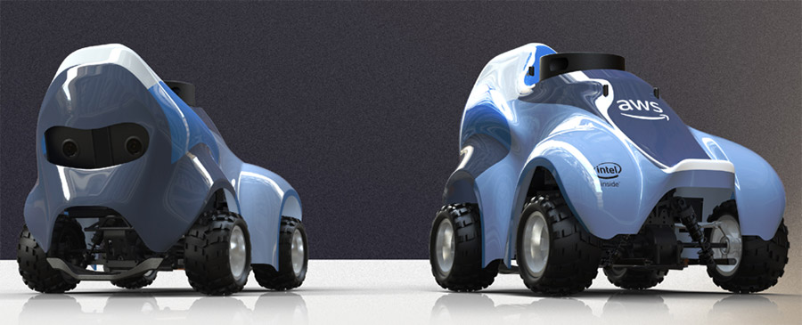
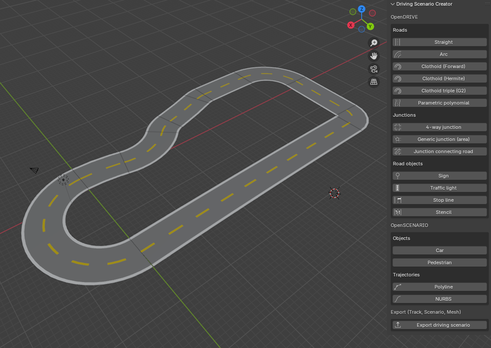
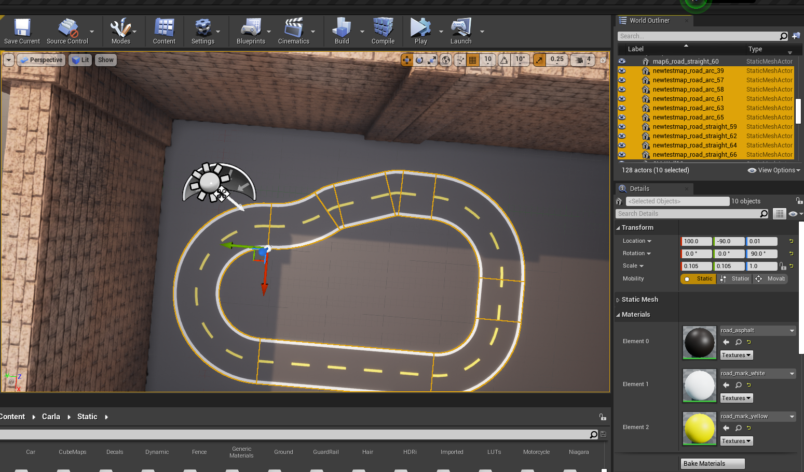
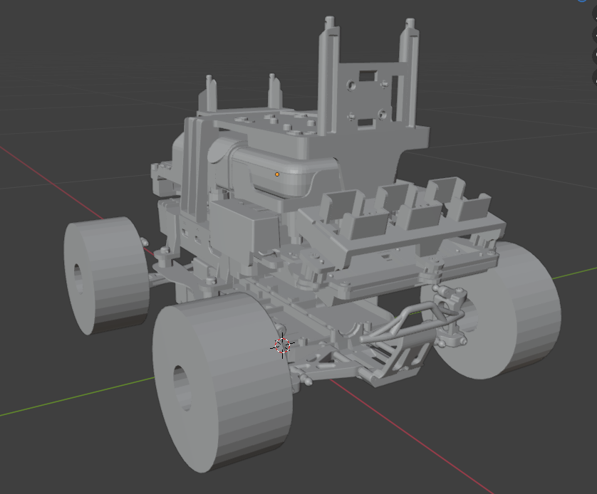

Deepracer Carla Simulator wiki

Welcome to the wiki!
Here you will find step by step how to import and work with the AWS Deepracer in Carla Simulator (0.9.15 version).
Quick Start:
1. Prerequisites and Dependencies Installation
To make the script and the simulator work, you need to prepare your environment with the following elements:
-
Download the already compiled CARLA package which can be found on this link.
-
Python Libraries: Install the required graphical and calculation dependencies by running the following command:
pip install pygame numpy matplotlib carla
Extract the CARLA package:
tar -xvzf CARLA_0.9.15.2-2-gb23c01ae4-dirty.tar.gz
2. Launch the Map and Deepracer!
cd CARLA_Shipping_0.9.15.2-2-gb23c01ae4-dirty/LinuxNoEditor
Launch the simulator: (Render off screen flag is used so that the window does not pop up)
./CarlaUE4.sh -RenderOffScreen
While the simulator is already running, you can launch the client. Use this manual driving controler script to test it out.
python3 deepracer_manual_control.py
You will be able to drive the car using the WASD keys
Imitation learning
Here is a quick setup guide to start testing the Deepracer driving by itself!
- Python Libraries: Install the required graphical and calculation dependencies by running the following command:
pip install opencv-python torch torchvision pillow
- Environment settings
1) Download the .pth file on this link
2) Download these 3 files from sample scripts:
3) All 4 downloaded files must be placed in the same directory
Run the autopilot
First, launch the simulator: (Render off screen flag is used so that the window does not pop up)
./CarlaUE4.sh -RenderOffScreen
Example1
- Autopilot onboard camera:
python3 run_autopilot_demo.py
Example2
- Top-down view code. Mode can be changed between trail (red trail that follows the Deepracer) and heatmap. Each camera belongs to a different track top view. Cameras available from 1 to 5 and from 8 to 13.
python3 fancyvideocam.py --mode trail --cam 4
For further information, check the Imitation learning repository here: https://github.com/urjc-deepracer/sim-carla-il-deepracer
📄 Each individual part documentation links
In case you want to explore or modify any part or asset, here are the links to the different tutorials. They explain the creation an implementation of the Deepracer and the creation and implementation of the Racetracks.
How to create the racetracks and import them:


How the Deepracer was modeled and how to import it:

How to use the Carla client to connect to the server:
How to connect a remote to drive the Deepracer (for testing or dataset generation)
In case you need help with the Unreal Engine 4 interface, here is a quick introduction guide: